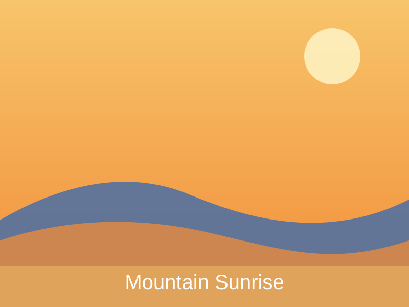
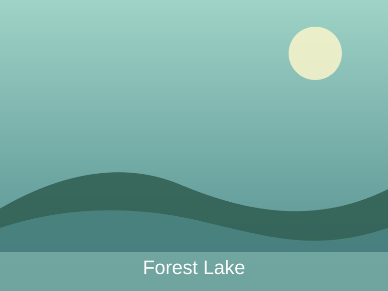
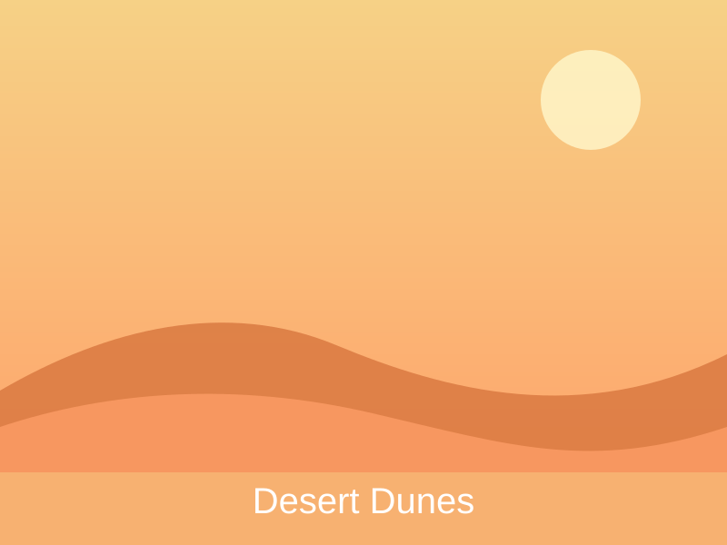
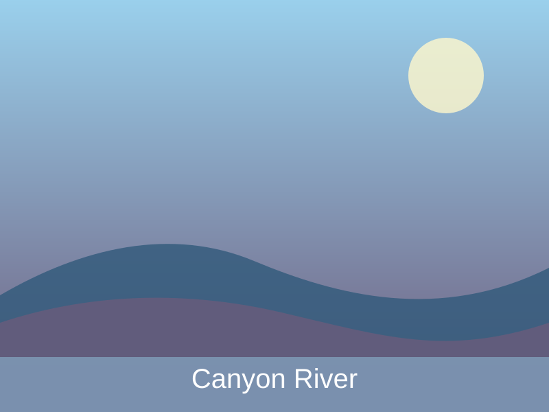
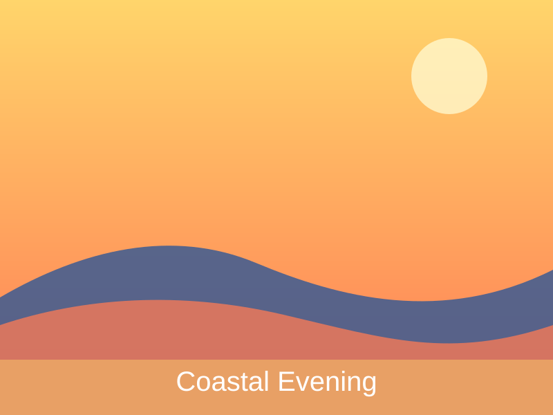
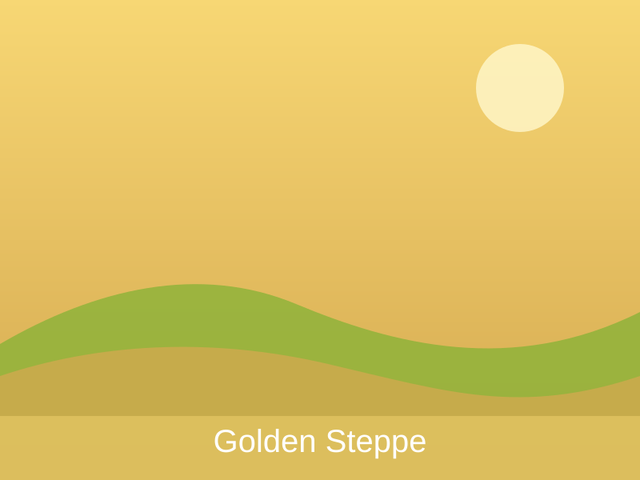
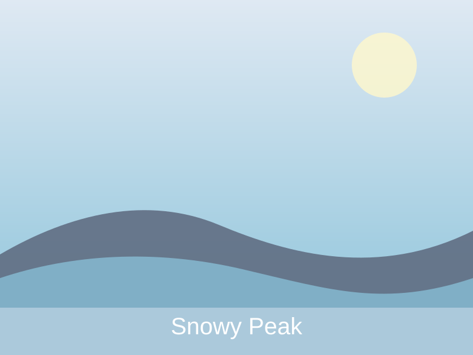
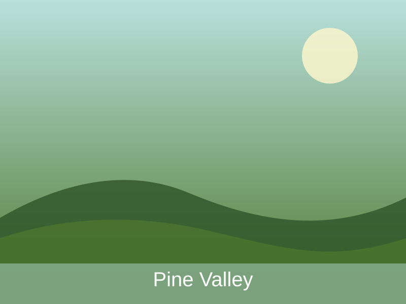
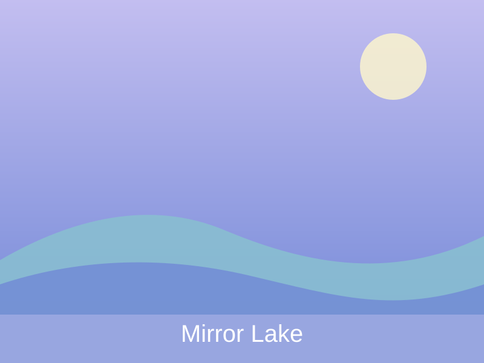

This gallery highlights nine illustrated landscapes, from mountain sunrises to quiet lakes and wide open steppe scenes. The goal of the page is to show how one simple layout can stay clean and readable across phones, tablets, and large screens.
The design uses a mobile-first grid, adapts to user color preferences, and turns off motion effects for people who prefer reduced movement. Each image includes descriptive alternative text so the page stays more accessible and easier to review.








